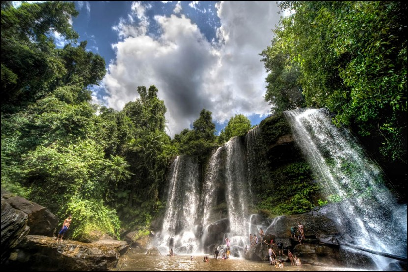
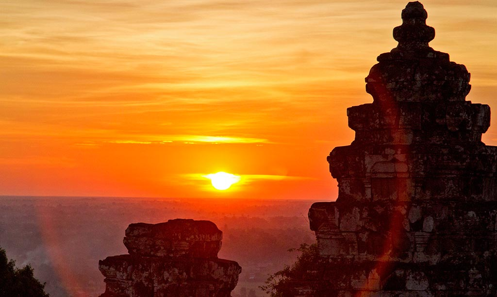
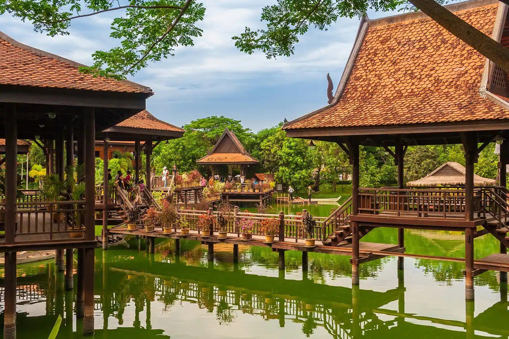
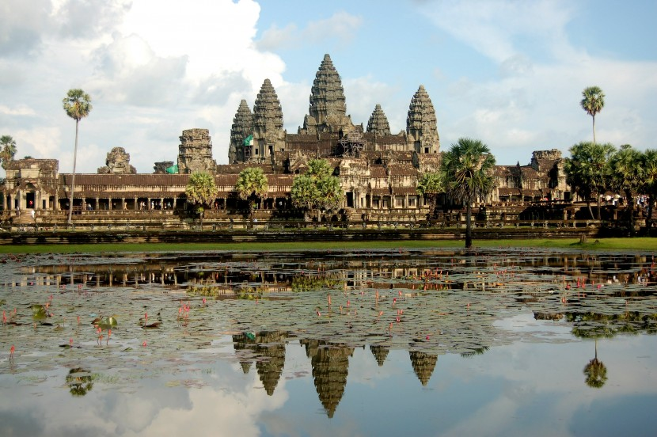
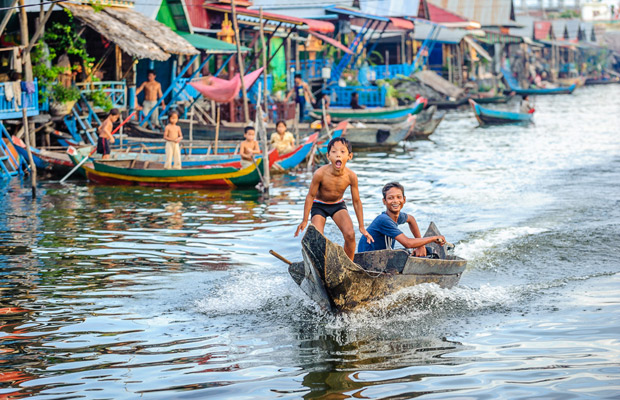

The name "Siem Reap" can be translated to mean 'defeat of Siam' (siem in Khmer), and is commonly taken as a reference to an incident in the centuries-old conflict between the Siamese and Khmer kingdoms, although this is probably apocryphal. According to oral tradition, King Ang Chan (1516–1566) had named the town "Siem Reap" after he repulsed an army sent to invade Cambodia by the Thai king Maha Chakkraphat in 1549. However, scholars such as Michael Vickery consider this derivation to be simply a modern folk etymology, and maintain that while the names Siem Reap and Chenla. the old Chinese name for Cambodia, may perhaps be related, the actual origin of the name is unknown.
Siem Reap offers a wide range of eating and drinking options with new businesses at all price ranges opening almost daily it seems. The Old Market area is, depending on your perspective, either an exciting and vibrant place offering a vast selection of eating and drinking options that is not to be missed, or a tourist ghetto offering a vast selection of generally non-authentic eating and drinking options that should be avoided at all costs. More likely your reality will lie somewhere in between, closer to which side is entirely up to you. Personally, I would neither over nor under-emphasize the area. Go at least once and draw your own conclusions and don't feel ashamed of your opinion no matter which side of the spectrum it should fall.The growth of the area started on what is now almost officially (there's a sign up now) known as "Pub Street"; or "Bar Street,"; depending on your choice of terminology, but food and drink options have since spread to a number of surrounding streets as well.
Siem Reap Pub Street itself would at this point, probably be more accurately known as "Food Street". With two exceptions, The Angkor What? Bar and Temple Club, as the emphasis here is now almost entirely on food opposed to drinking. That said, in the alleys and streets running both parallel and perpendicular to "Pub/Bar/Food Street" you can not only find more restaurants but many bars as well. Drinking until the wee hours of the morning remains a very viable activity here. The alleyway to the north of "Pub Street" has recently seen several new bars open, while the alleyway to the south has been filled up with restaurants.
The Phnom Kulen mountain range is located 30 km northwards from Angkor Wat. Its name means "mountain of the Lychee” . There is a sacred hilltop site on top of the range.Phnom Kulen is considered a holy mountain in Cambodia, of special religious significance to Hindus and Buddhists who come to the mountain in pilgrimage.It also has a major symbolic importance for Cambodians as the birthplace of the ancient Khmer Empire, for it was at Phnom Kulen that King Jayavarma II proclaimed independence from Java in 804 CE. Jayavarman II initiated the cult of the king, a linga cult, in what is dated as 804 CE and declaring his independence from Java of whom the Khmer had been a vassalage state (whether this is actually "Java" or "Lava" (a Lao kingdom) is debated, as well as the legend that he was earlier held as a ransom of the kingdom in Java. See Higham's The Civilization of Angkor for more information about the debate). During the Angkorian era the relief was known as Mahendraparvata (the mountain of Great Indra).
Sunset watching at Bakheng Mountain is always a fun thing to do, especially when traveling. But at Angkor Wat, watching the sun going down is a very interesting event. Not because the sun looks prettier from there, but because there are so many people gathering for it. Where do these people gather? At a temple called Phnom Bakheng (a short distance from the Angkor temple), and this place has been famous for a while now as the spot for sunset watching.Some people think Phnom Bakheng is overrated and too crowded, while others think it's only so-so. But I found Phnom Bakheng to be a great place for an Angkor Wat sunset!1. It is a great place, because the temple is on top of a hill. That way you'll get an unobstructed view of the sun as it goes down.2. It is also a great place, because what could be more Cambodian than watching the sunset from an ancient Cambodian temple?3. As a bonus, you'll also get to see the Angkor Wat complex from a distance, and at high elevation.4. And finally, when you are at the top of the Phnom Bakheng temple, you have the enviable position of being able to see all 360 degrees of the landscape just by walking around from one corner to another. And the view is really pretty.So, sunset or no sunset, Phnom Bakheng is indeed a cool place to be!
Cambodian Cultural Village situated in Siem Reap province along the road number 6 distanced 3 Km from International Siem Reap Airport and 10 Km Angkor Wat temple the world heritage with 210.000 square meter complexes. The construction of Cambodian Cultural Village started on the half of 2001 and officially grand open on the 1st January 2004.Cambodian Cultural Village is an antique resort in Cambodia. Through the broadly analysis and popular technique from abroad have made construction, planning, architecture, creative planning getting well to be international standard. Cambodian Cultural Village is a place to conservation, develop and publish the Cambodian Culture. For participating country development, company invested a lot for correcting the whole construction to be luxury and our splendid performance has been shown. Cambodian Cultural Villages is a tremendous resort that culture, tradition were gathered and performed by our dancers that suitable to find out, the lifestyle landmark providing completed facilities and recreation services for both tourists and local community. Visit Cambodian Cultural Villages is getting to know Cambodia, Cambodian culture, Cambodia ethnic and Khmer traditional. Cambodian Cultural village is a historical reveal and tourism entrance.Cambodian Cultural Village Resort.The village where you can find all the significant people in Cambodia. Come and visit us, it like you have traveled all over Cambodia in haft day. Cambodian Cultural Village welcomes the visitors all around the world.
Since the publicised Angkor Wat temple "discovery" in the mid 19th century, it has been described as the largest religious building in the world, and is rightly spoken of as one of the wonders of the ancient world, along with sites such as Macchu Picchu and the Taj Mahal. The temple is located just over 6km from Siem Reap, is the centrepiece of the Angkor Archaeological Park, and has been UNESCO listed as a world heritage site since 1992.One of the largest Angkor temples, Angkor Wat was built under King Suryavarman II in the early 12th century. Originally built as a temple to Vishnu, it has been in continuous use as a Buddhist shrine since the adoption of Theravada Buddhism by the Khmer people, meaning it has remained in excellent condition over the centuries. Because of its symbolic representation of ancient Khmer nationhood, the temple survived the Khmer Rouge years relatively undamaged, and tourist numbers have increased steadily since the political situation stabilised.Angkor Wat is the largest Hindu temple complex in the world, situated at Angkor, Cambodia, built by King Suryavarman II in the early 12th century as his state temple and capital city. As the best-preserved temple at the site, it is the only one to have remained a significant religious centre since its foundation – first Hindu, dedicated to the god Vishnu, then Buddhist. The temple is at the top of the high classical style of Khmer architecture. It has become a symbol of Cambodia, appearing on its national flag, and it is the country's prime attraction for visitors.
Kampong Khleang is located on the northern lake-edge about 35 km east of Siem Reap town, more remote and less touristed than Kampong Phluk. Visitors to Kampong Khleang during the dry season are universally awestruck by the forest of stilted houses rising up to 10 meters in the air. In the wet season the waters rise to within one or two meters of the buildings. Like Kampong Phluk, Kampong Khleang is a permanent community within the floodplain of the Lake, with an economy based in fishing and surrounded by flooded forest. But Kampong Khleang is significantly larger with near 10 times the population of Kampong Phluk, making it the largest community on the Lake. The area can be reached by boat from the Chong Khneas docks or by a combination of road to Domdek on Route #6 and then boat to the village, the best method depending on the time of year. During the dry season, boats cannot get all of the way to the main villages. Consult your guesthouse or tour operator about current conditions. Many tour operators have very little experience in this area so it is best to consult with adventure tour operators and guesthouses that specialize in this area. Small group tours begin at about $35 for a half day and range up through $70 depending on the size of the group and the type of tour. To get there yourself, either charter a boat from Chong Khneas or take car or moto to Domdek village on Route #6 east of Siem Reap, turn south and continue to the water's edge where boats wait to ferry passengers into the village. During the dry season the road is clear and you can take a car or moto all of the way to the village.)